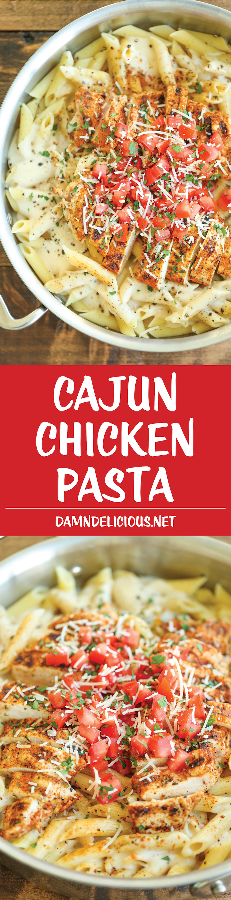

Cajun Chicken Pasta Recipe

Ingredients
- 2 boneless chicken breasts
- 2 tablespoons of olive oil, divided
- 1 tablespoon of cajun seasoning
- 8 ounces of penne pasta
- 2 tablespoons of unsalted butter
- 3 cloves of garlic
- 1 cup of heavy cream
- 1/2 teaspoon of lemon zest
- 1/4 cup of grated parmesan cheese
- Kosher salt and black pepper, to taste
- 2 roma tomatoes, diced
- 2 tablespoons of chopped fresh parsley leaves
Directions
- In a gallon size Ziploc bag, add chicken, 1 tablespoon olive oil and cajun seasoning, shaking to coat thoroughly.
- Heat remaining 1 tablespoon olive oil in a grill pan over medium high heat. Add chicken and cook, flipping once, until cooked through, about 5-6 minutes on each side. Set aside and keep warm
- In a large pot of boiling salted water, cook pasta according to package instructions; drain well.
- Melt butter in a saucepan over medium heat. Add garlic, and cook, stirring frequently, until fragrant, about 1-2 minutes.
- Gradually whisk in heavy cream and lemon zest. Cook, whisking constantly, until incorporated, about 1-2 minutes. Stir in Parmesan until slightly thickened, about 1-2 minutes. If the mixture is too thick, add more heavy cream as needed; season with salt and pepper, to taste.
- Stir in pasta and gently toss to combine.
- Serve immediately with chicken, garnished with tomatoes and parsley, if desired.
Visit Damn Delicious's Cajun Chicken Pasta Recipe for more information!
Contact Me
If you have any questions, email eleanor.knipfer@umontana.edu for assistance.
The University of Montana
32 Campus Drive
Missoula, MT 59812